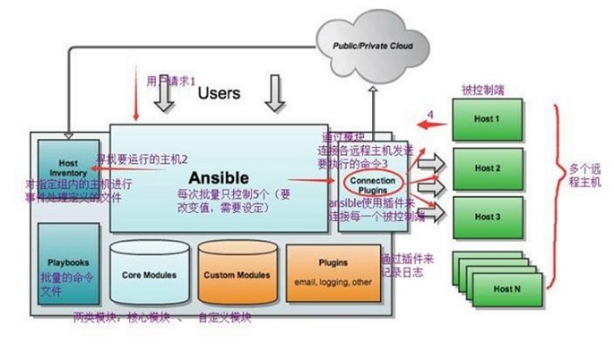
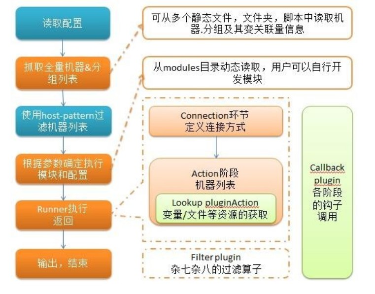

Ansible 是一个开源的基于 OpenSSH 的自动化配置管理工具。可以用它来配置系统、部署软件和编排更高级的 IT 任务，比如持续部署或零停机更新。Ansible 的主要目标是简单和易用，并且它还高度关注安全性和可靠性。基于这样的目标，Ansible 适用于开发人员、系统管理员、发布工程师、IT 经理，以及介于两者之间的所有人。Ansible 适合管理几乎所有的环境，从拥有少数实例的小型环境到有数千个实例的企业环境。
ansible是如何工作的
Ansible没有客户端，因此底层通讯依赖于系统软件，Linux系统下基于OpenSSH通信，Windows系统下基于PowerShell,管理端必须是Linux。
ansible工作大致流程：使用者认证通过后在管理节点通过Ansible工具调用各应用模块将指令推送至被管理端执行，并在执行完毕后自动删除产生的临时文件。
ansible架构图

上图中我们看到的主要模块如下：
- Ansible:组合HostInventory、Modules、Plugins等功能，可理解为Ansible命令工具；
- HostInventory:Ansible管理主机的清单，包括端口、密码、IP或主机名；
- PlayBooks:任务剧本，编排定义Ansible任务集的配置文件，由ansible顺序依次执行，通常是JSON格式的YML文件；
- CoreModules: ansible执行命令的内置功能模块，如shell、command、yum等;
- CustomModules: 自定义模块，支持多种语言，如PHP、Python、PERL等;
- ConnectionPlugins: 连接插件，Ansible和Host通信使用。
ansible任务执行过程
Ansible 系统由控制主机对被管节点的操作方式可分为两类，
- Ad-Hoc模式：临时命令，使用单个模块，批量执行单条命令。
- Playbook模式：组合多条ad-hoc操作的配置文件。
执行流程

Ansible在运行时， 首先读取ansible.cfg中的配置， 根据规则获取Inventory中的管理主机列表， 并行的在这些主机中执行配置的任务， 最后等待执行返回的结果。
ansible命令执行过程
- 加载配置文件，默认
/etc/ansible/ansible.cfg； - 查找对应的主机配置文件，找到要执行的主机或组；
- 加载对应的模块文件，如command；
- 通过ansible将模块或命令生成对应的临时py文件(python脚本)， 并将该文件传输至远程服务器；
- 对应执行用户的家目录的
.ansible/tmp/xxx/xxx.py文件; - 给文件+x权限；
- 执行并返回结果;
- 删除临时py文件，
sleep 0退出。
ansible通讯发展史
- 基于python第三方库Paramiko–ansible1.3版本以前
- 基于OpenSSH,支持ControlPersist(持续管理)–ansible0.5版本开始支持，1.3版本设置为默认
- 加速模式，是开启ControlPersist后SSH的2~6倍，是Paramiko通信速度10倍。缺点
对Ad-Hoc命令不友好